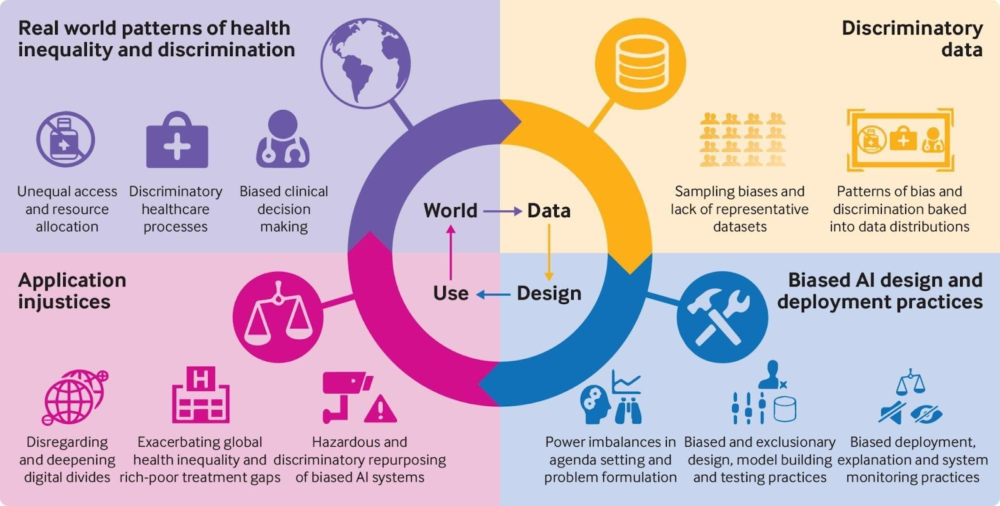

Syllabus
Investigate the effect of human and dataset source bias in the development of ML and AI solutions
Learning Intention and Success Criteria
Learning Intention - Students will:
- Understand how human and dataset biases can impact the development and outcomes of machine learning (ML) and artificial intelligence (AI) models.
Success Criteria - Students can:
- Explain the role of human bias in AI development.
- Describe how biases in datasets are introduced and propagated in ML models.
- Evaluate the potential consequences of biases on AI decision-making.
- Suggest methods to mitigate bias in AI systems.
Content
Bias in machine learning and artificial intelligence arises when the models, data, or decisions made by developers unintentionally favour certain outcomes, groups, or perspectives over others. This can occur due to two primary factors:
- Human Bias – The biases held by the developers, data scientists, or organisations.
- Dataset Source Bias – The biases present within the data that is used to train AI models.
These biases can have profound effects on the fairness, accuracy, and inclusivity of AI systems, leading to ethical concerns and practical challenges in real-world applications.
Human Bias
Human bias refers to the implicit and explicit preferences, beliefs, or assumptions that developers may hold, which can influence the design and decision-making processes involved in creating AI systems. Examples include:
- Feature Selection: The choice of variables or features for a model can reflect the developer's priorities or preconceived notions about what is important. For instance, if socio-economic status is prioritised as a feature in predictive models for employment, the model may perpetuate existing inequalities.
- Algorithm Design: Developers might unintentionally favour certain algorithmic structures or processes that reflect their own experiences or goals, even if those structures introduce bias.
- Labelling Bias: During the creation of datasets, humans often label data (e.g., tagging images or categorising information). Their labels may reflect personal biases, reinforcing stereotypes or errors.
Dataset Source Bias
Dataset bias occurs when the data used to train machine learning models is not representative of the broader population or task. There are several ways dataset bias can be introduced:
- Historical Bias: This occurs when the dataset reflects past inequalities or discriminations. For instance, if a hiring algorithm is trained on historical data from an industry with low gender diversity, it may learn to favour male candidates over female candidates.
- Sampling Bias: If certain groups are overrepresented or under-represented in the dataset, the model will generalise poorly to the under-represented groups. For example, medical AI systems trained on data from one demographic may fail to accurately diagnose or recommend treatments for another.
- Label Bias: The way data is classified or labelled can introduce biases, particularly in cases where human judgement is required, such as labelling hate speech or offensive content in social media posts. Label bias can reflect cultural or individual bias, making certain words or behaviours disproportionately flagged as problematic.

Consequences of Bias in AI Systems
The effects of human and dataset bias in AI systems can be significant, leading to:
- Discrimination: Biased AI systems may discriminate against certain groups based on race, gender, or socio-economic status. For example, biased recruitment algorithms can perpetuate gender inequality in hiring.
- Reduced Trust: Users and society may lose trust in AI systems if they consistently produce unfair or biased outcomes.
- Poor Decision-Making: Bias in models can lead to inaccurate or inappropriate decisions. For example, a biased healthcare algorithm could result in misdiagnoses for under-represented populations.
- Legal and Ethical Implications: Many countries have anti-discrimination laws, and biased AI systems could lead to legal challenges. Furthermore, there are growing concerns about the ethical responsibility of organisations deploying AI systems.
Mitigating Bias in AI Development
Several strategies can be employed to reduce bias in AI models:
- Diverse Teams: Building teams with diverse perspectives can help mitigate bias by ensuring that different viewpoints are considered during AI development.
- Bias Audits and Testing: Conducting audits and testing models for bias across different demographic groups can help identify and correct biased behaviour.
- Inclusive Datasets: Curating and using datasets that are representative of the entire population can help prevent dataset bias. This might include collecting additional data for under-represented groups.
- Algorithmic Fairness: Using fairness-aware algorithms that aim to equalise outcomes for different groups can be an effective mitigation strategy.
- Transparency and Accountability: Making AI models and decisions more transparent, and holding developers accountable for biased outcomes, is essential for ensuring fair AI development.
Example: Mitigating Bias in Hiring Algorithms
To reduce gender bias in hiring algorithms, companies have implemented strategies like anonymising candidate resumes (removing names and genders) and training models on more inclusive datasets that do not reflect historical gender biases.
Theory
Practical
- Provide instructions for a practical activity or direct the students to an EdStem activity
Sources
- List sources here
PowerPoint